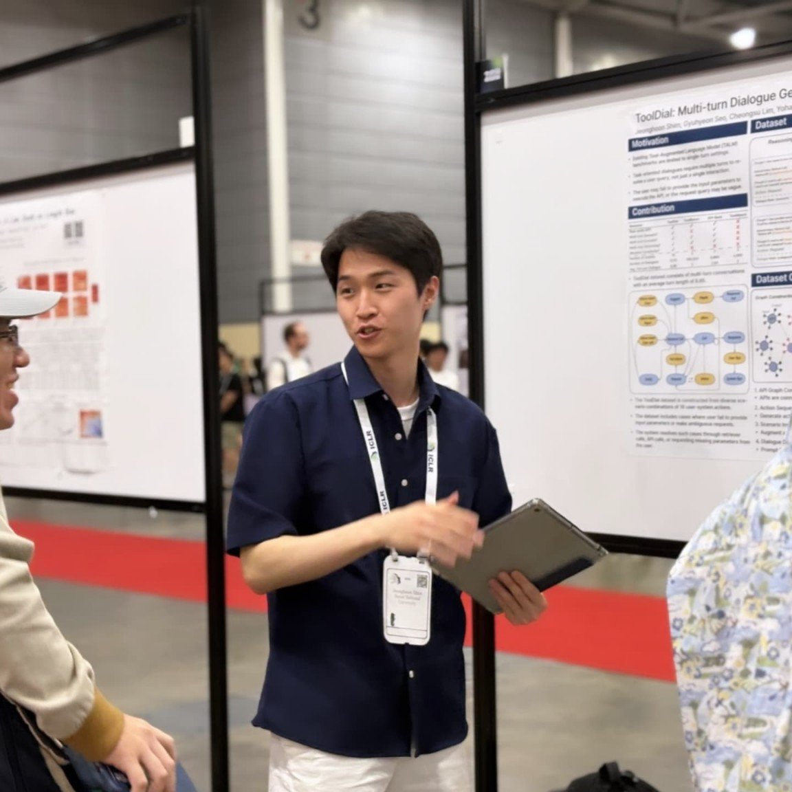
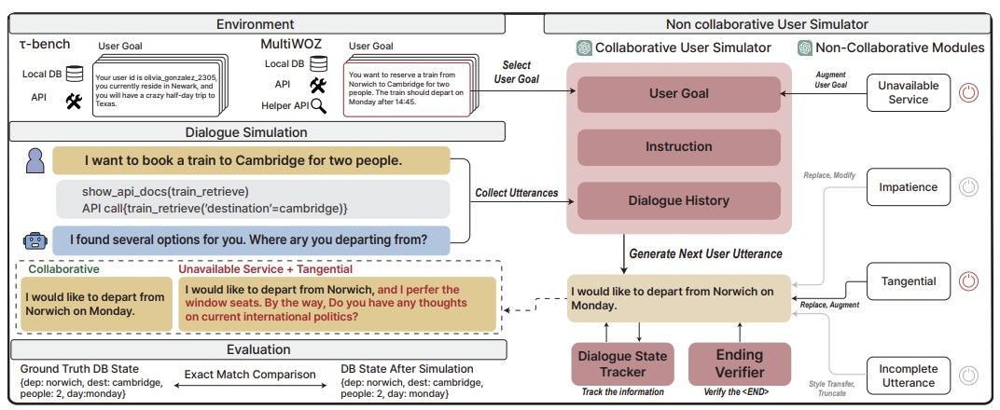
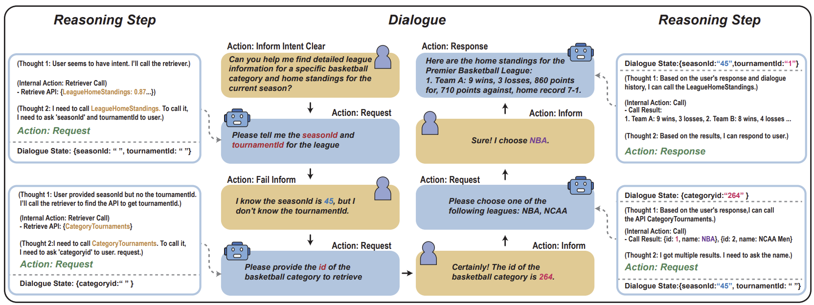

Jeonghoon Shim
Ph.D. Student · Graduate School of Data Science
Seoul National University
Seoul National University
I am interested in defining and solving problems in the training and evaluation of AI Agents toward real-world deployment. Previously, I've conducted research on dialogue interaction between AI Agents and human users. I am also interested in RL training of AI Agents and visually-grounded Agents (e.g., GUI, Mobile agents).
Publications

ICLR 2026
Non-Collaborative User Simulators for Tool Agents
- Identification of non-collaborative user behaviors observed in real-world customer service
- Proposal of simulation methods that replicate non-collaborative users
- State-of-the-art and fine-tuned agents are significantly impaired by non-collaborative users

ICLR 2025
ToolDial: Multi-turn Dialogue Generation Method for Tool-Augmented Language Models
- Syntactic dialogue data generation method using an API graph and agenda-based approach
- Automatic generation of multi-turn dialogues covering diverse scenarios in quality and quantity
- State-of-the-art tool agents struggle to perceive exact input parameter states in multi-turn dialogue

KST 2022
Analysis of Seoul Public Bike Demand during Night Times by Applying Heckman Selection Models
- Analysis of shared bicycle usage pattern differences between late-night and daytime hours in Seoul
- Application of Heckman Selection models on public bike data with geospatial features
- Current station placement may be misaligned with the needs of late-night users
Education
03/2025 – Present
Ph.D. in Data Science
Seoul National University · Advisor: Yohan Jo
03/2023 – 02/2025
M.S. in Data Science
Seoul National University · Advisor: Yohan Jo
03/2017 – 02/2023
B.S. in Urban Planning and Engineering
Hanyang University · Advisor: Junho Ko
incl. 2-year absence for military service
Industry Collaboration
12/2025 – Present
Yield Analysis LLM Agents for Semiconductor Manufacturing
Samsung Electronics, AI Center
- Development of a diagnostic framework for yield analysis LLM agents in semiconductor manufacturing
- Automatic extraction of non-collaborative behavior categories from internal engineer queries
- Simulation of extracted behaviors and diagnosis of agent weaknesses under such conditions
Teaching
Large Language Models and Conversational AI
Computing for Data Science 1